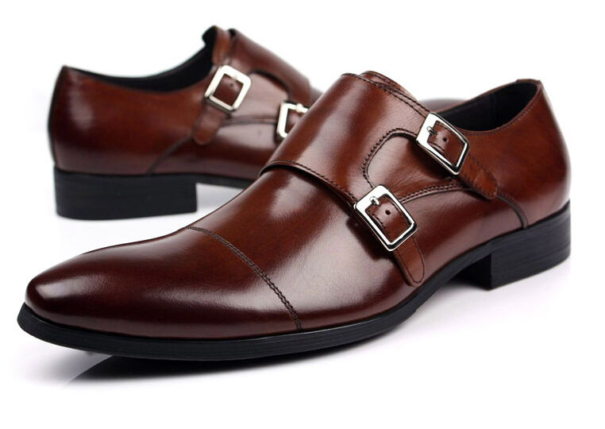
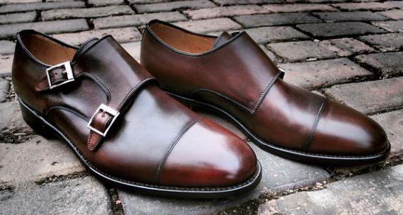

Como se faz, história, curiosidades, estilo, modelos... Tudo o que você precisa saber sobre o grande companheiro de caminhada do homem
vídeo
Bruno Rodrigues
Reportagem e texto
Marcelo Ventura
Arte
Fernando Kazuo
Antes que você me acuse, critique ou explore, ande uma milha nos meus sapatos
Elvis Presley
No corre-corre de toda manhã, ao terminar de se vestir, você calça os sapatos e sai para matar o seu leão do dia. E nem se dá conta da importância desses calçados para sua vida, muito menos para a humanidade. Não, não é exagero. Se você valoriza o mundo hoje como ele é e as várias invenções tecnológicas ao seu redor, saiba que depois que nossos antepassados se ergueram e passaram a andar, o sapato foi sua grande invenção – e desde então, seu companheiro de caminhada. Afinal, o homem só conseguiu fugir de predadores, percorrer grandes distâncias em busca de caça e alimento e explorar o planeta porque protegeu os pés.
Os sapatos surgiram no período Paleolítico, também conhecido como Pedra Lascada (veja linha do tempo abaixo), quando o homem passou a criar instrumentos para ajudá-lo nas tarefas e necessidades cotidianas. Foi nesse momento que ele envolveu os pés num pedaço de pele de animal para evitar se machucar nos terrenos irregulares e aquecê-los nos dias mais frios. Ganhou, assim, mais agilidade e autonomia. Item de sobrevivência para as grandes caminhadas na Pré-História, o calçado, além de ser um item do vestuário cercado de simbolismos, evoluiu, impulsionou o desenvolvimento da humanidade e da economia e revolucionou as relações sociais nas mais diversas áreas.
Com o tempo, começou-se a “costurar” os calçados - e a técnica foi se aperfeiçoando. No Antigo Egito, palha, papiro e fibra de palmeira eram usados como matéria-prima.
Não há comprovação histórica definitiva, mas talvez a distinção de classes por intermédio dos sapatos date dessa época: sandálias de faraós e da nobreza eram adornadas com metais preciosos e se diferenciavam conforme a posição social. Os mais humildes na hierarquia egípcia usavam materiais simples, cores escuras e costumavam carregar os calçados nas mãos para usá-los apenas quando fosse realmente preciso.
Ricos e pobres, poderosos e comandados também eram marcados na Grécia por meio dos sapatos: no famoso teatro grego, os atores costumavam usar calçados com saltos de tamanhos distintos para destacar a posição e a importância dos personagens. Os gregos ainda inventaram moda: criaram a diferenciação de pé esquerdo e pé direito, que ainda demoraria muito para ser adotada pela indústria do futuro.
Da prancheta à linha de produção
Antes de ir para a fábrica, um sapato passa por um longo processo de desenvolvimento – e nem tudo que foi desenhado e pensado chega realmente às lojas
Na Roma Antiga, as cores dos calçados é que demonstravam quem era quem: cônsules tinham sapatos brancos; senadores, marrons e presos por quatro fitas pretas de couro. Os soldados romanos usavam botas de cano curto que descobria os dedos.
Como se vê, o uso social dos sapatos vem de longa data. Mas demorou um pouco para sapatos virarem itens de moda. Na Idade Média, tanto os calçados de homens como os das mulheres eram de couro, abertos, e se assemelhavam muito às sapatilhas que conhecemos hoje. Com o tempo, os homens passaram a calçar botas altas e baixas, fechadas na frente e no lado. Mas até o fim do período Barroco (século 8), não existia diferença entre sapatos masculinos e femininos.
Um sapato que fica bem numa pessoa é pequeno para outra. Não existe uma receita para a vida que sirva para todos
Carl Jung
Dando um belo “salto” na história, desculpem o trocadilho, entre os séculos 14 e 16 os homens passaram a usar sapatos com salto, principalmente para cavalgar. A numeração dos calçados também surgiu nesse período. Em 1305, o Rei Eduardo I, da Inglaterra, resolveu padronizar tudo e determinou que uma polegada considerasse três grãos secos de cevada alinhados (2,54 centímetros). Os sapateiros ingleses se empolgaram e, pela primeira vez, começaram a fazer sapatos em tamanho padrão na Europa, usando 1/3 de uma polegada: um calçado que tivesse 39 grãos de cevada enfileirados seria tamanho 39. Hoje, a indústria calçadista usa uma unidade métrica chamada de Ponto. O Ponto Francês, usado no Brasil e na maior parte da Europa, tem 2/3 de um centímetro: 0,666 cm. Nos Estados Unidos usa-se o Ponto Inglês (0,846 polegada ou 1/3 de uma polegada).
Mas, como dizem as mulheres, vamos subir novamente no salto. Por muito tempo o salto alto foi de uso exclusivo do homem. Embora utilizado bem antes por alguns grupos, como açougueiros egípcios com o objetivo de proteger os pés e evitar o contato com a sujeira ou nobres europeus, que se equilibravam sobre saltos de até 60 centímetros para evitar o contato com a imundície das ruas naquela época, foi na corte francesa de Luis XIV, no século 17, que os saltos ganharam destaque. Assim como as perucas e outros itens luxuosos, passaram a ser elementos da moda masculina. O motivo: o monarca francês era baixinho (tinha 1,60 metro de altura) e queria parecer mais alto.
COMO SE FAZ UM SAPATO
Visitamos uma fábrica de sapatos em Franca (SP) e mostramos neste vídeo todo processo de produção. Assista
No reinado seguinte, o salto conquistou o mundo com o rei Luis XV - ele até virou sinônimo dessa parte do sapato: “salto 15”. A partir daí, já no século 18, os homens foram abandonando o salto e deixando a ostentação luxuosa dos sapatos para as mulheres – o que ainda é uma característica nos dias atuais. No começo do século 19 é que os sapatos de homens começaram a se diferenciar dos modelos das mulheres através de cores, estilo, desenho e tamanho da parte do calcanhar etc. Até 1840, os sapatos eram feitos artesanalmente e em linha reta, sem diferenciação entre pé esquerdo e pé direito.
Voltando um pouquinho no tempo: cerca de cinquenta anos antes, em 1790, foi montada a primeira máquina experimental de costurar sapatos. Os pregos de metal para fixar as solas só vieram vinte anos depois. Em 1839, os sapatos começaram a ser feitos com formas de madeira.
A passos largos
Uma pequena cronologia sobre alguns dos principais fatos históricos dos sapatos masculinos ao longo do tempo
E tudo começou a mudar mesmo com a Revolução Industrial.
Embora o primeiro registro de manufatura de sapatos, com o fornecimento de 4000 pares de sapatos e 600 botas para o exército inglês tenha ocorrido em 1642, a indústria calçadista só alçou voo para valer após a Revolução Industrial, 200 anos mais tarde. No Brasil, os sapatos começaram a se popularizar com a chegada da corte portuguesa, em 1808. O primeiro polo industrial de calçados nacional se instalou
no início do século XX, em Novo Hamburgo, Rio Grande do Sul, por causa da proximidade de matéria-prima (couro) e da presença dos imigrantes.
No decorrer dos anos, o interior de São Paulo tomou para si a relevância na produção de calçados. Com a expansão do café no Oeste Paulista a partir de 1920 e a estrada de ferro Mogiana, Franca se tornou a principal cidade produtora de sapatos masculinos do país, sendo considerada até hoje a “Capital Nacional dos Calçados”. No seu auge, mais de 1000 indústrias de médio e grande porte, de marcas importantes,
se estabeleceram na cidade. Hoje, embora ainda abrigue várias fábricas importantes de calçados e seus componentes – e tenha um shopping center dedicado exclusivamente ao sapato – o parque industrial de Franca ficou mais diversificado e conta com outros ramos, como confecção, cosméticos e fundição.
Estio aos seus pés
Conheça alguns dos modelos de sapatos que tem conquistado os homens por toda parte


Com a evolução da indústria calçadista no Brasil e no mundo, foram desenvolvidos tantos materiais, cores, modelos e detalhes de sapatos masculinos que chega a ser difícil dizer qual será a nova tendência ou o que vai ficar pra valer nos pés do homem moderno nos próximos anos. Por outro lado, essa variedade permite um leque de possibilidades e combinações para todos os estilos e personalidades que extrapolam a criatividade – de calça social tradicional a jeans, de calças de sarja a bermudas, modelos para calçar com ou sem meias, bicolores, monocromáticos ou multicolores, com solado de couro, tratorado ou de borracha lisa...
A verdade é que os sapatos possuem um grande poder de influência na moda, na cultura e até na definição do caráter masculino. Portanto, meu amigo, na hora que você for se vestir amanhã, escolha com carinho o seu pisante.
Toque pessoal
Um único par de sapatos pode passar por até 2.000 mãos no processo de produção na fábrica, o que garante que cada par seja único. Assista
Sapatos bizarros
Surpreenda-se com uma pequena amostra do que designers e projetistas de sapatos já imaginaram para cobrir os pés do homem